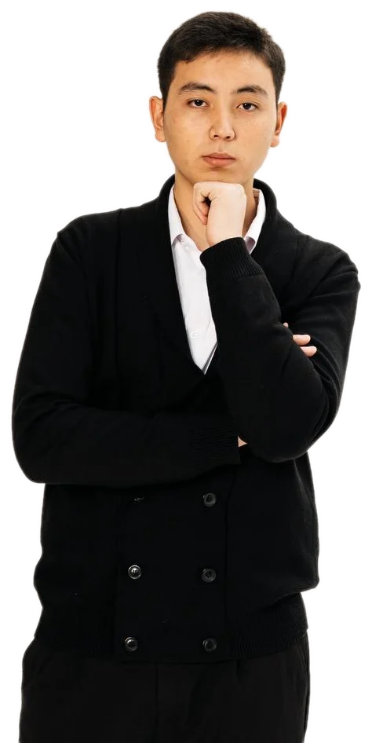

Алишер Аманғалиев
Цифрлық портфолио · HPE 321

Болашақ тарих мұғалімімін - өткенді жаңа технологиямен жеткіземін.
Жұлдызды жол
Жасанды интеллект пен білім берудің қысқа тарихы
Менің шоқжұлдызым
2-12 апта · жұлдызды басыңыз
Хабарласу.
© 2026 · Аманғалиев Алишер · SDU